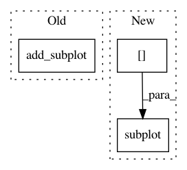

e6ed72a38ed22abf27cbe3e6dbee7fed3be9741b,doc/examples/segmentation/plot_regionprops_table.py,,,#,25
Before Change
// Plot area vs volume fraction
areas.plot(x="volume fraction", y="area", kind="scatter", ax=ax)
// Show image with lowest volume fraction
ax1 = fig.add_subplot(221)
ax1.imshow(images[0], cmap="gray_r")
ax1.set_axis_off()
ax1.set_title(f"fraction {fractions[0]}")
// Show image with highest volume fraction
After Change
grid = plt.GridSpec(2, 2)
ax1 = plt.subplot(grid[0, 0])
ax2 = plt.subplot(grid[0, 1])
ax = plt.subplot(grid[1, :])
// Show image with lowest volume fraction
ax1.imshow(images[0], cmap="gray_r")
ax1.set_axis_off()
ax1.set_title(f"fraction {fractions[0]}")
In pattern: SUPERPATTERN
Frequency: 3
Non-data size: 3
Instances
Project Name: scikit-image/scikit-image
Commit Name: e6ed72a38ed22abf27cbe3e6dbee7fed3be9741b
Time: 2020-01-06
Author: marianne.corvellec@ens-lyon.org
File Name: doc/examples/segmentation/plot_regionprops_table.py
Class Name:
Method Name:
Project Name: theislab/scanpy
Commit Name: 94ec55bd5c13d75a590f82d41ff66e422bc11b1d
Time: 2017-02-20
Author: f.alex.wolf@gmx.de
File Name: scanpy/plotting.py
Class Name:
Method Name: _scatter
Project Name: theislab/scanpy
Commit Name: 19f912e6cfd03597f340983e234fd826a18bfd3c
Time: 2017-02-28
Author: f.alex.wolf@gmx.de
File Name: scanpy/plotting.py
Class Name:
Method Name: ranking